30% now off on selected items!

please help us improve our services and products with your feedback!
how would you rate the quality of our baked goods?
how satisfied were you with the freshness of our baked items?
how would you rate the service you recieved?
how satisfied are you with the variety of products we offer?
how would you rate your overall experience at DOT.?